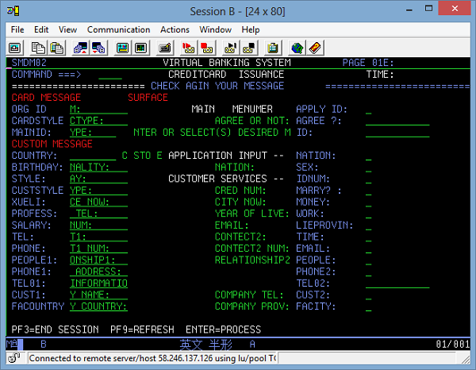
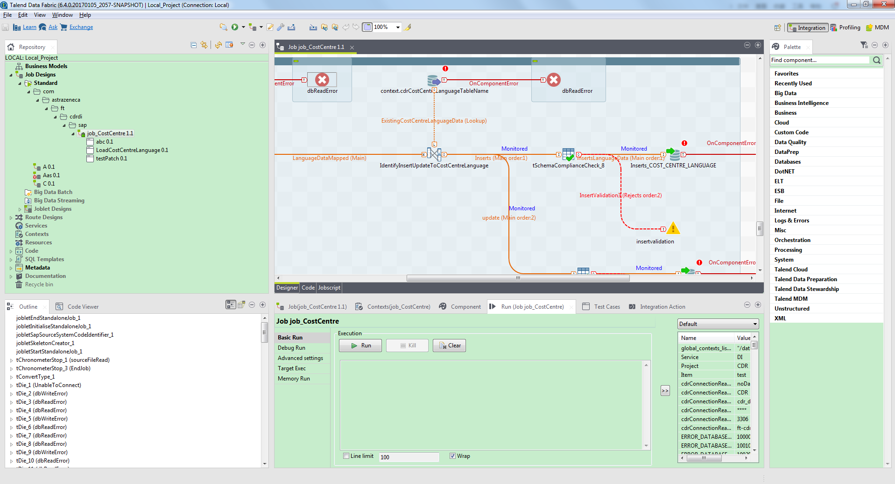
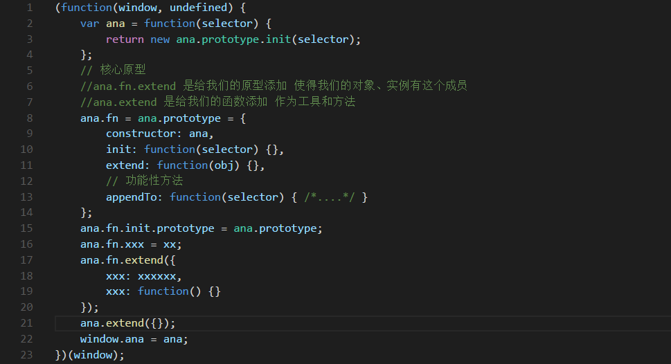
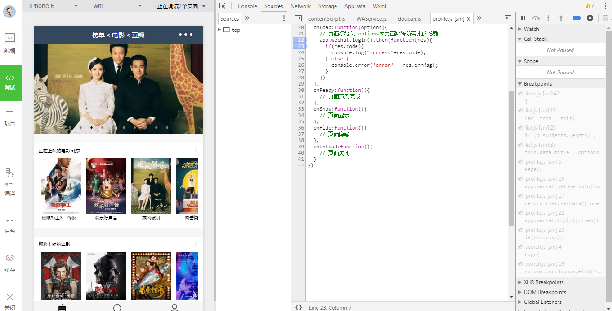
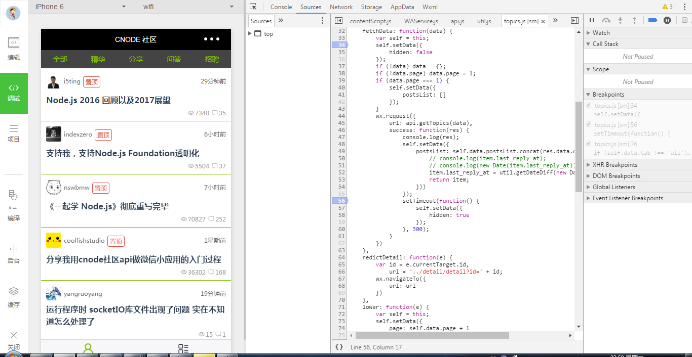
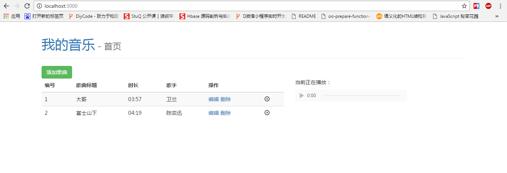

-
- Basic info. 基本信息
- 个人信息: 郭亮 / 男 / 1992.06
- 英语水平: CET-4
- 工作经验: 2.5年
- 政治面貌: 中共党员
- 毕业院校: 太原理工大学
- 专业: 本科 软件工程
- GitHub: www.github.com/RookieDay
-
- Experience. 项目与工作经验
大连花旗金融(2014.12-2015.5)
-
花旗信用卡项目 源代码
在花旗银行信用卡ECMS核心开发部门，在IBM大型机MainFrame ZOS390环境上，熟练采用Cobol、CICS、JCL编程语言进行信用卡业务的开发和维护。 在工作期间， 使用以上技术和组长协作开发完成功能较为完善的从Java平台到大机环境的信用卡信息管理系统的设计开发，并成功推广面向学校作为大机学习的进阶案例。

北京拓蓝科技(2015.5-至今)
-
Talend Open Studio 地址
主要负责公司产品Talend Open Data Studio的新功能开发和旧版本产品维护，熟练使用Eclipse debug技巧对产品bug进行修复，涉及技术Java、Eclipse RCP插件开发。 期间完成了产品过滤组件tmap中对数据的按需过滤和输入输出数据处理的在连接功能，完成了对集成的Big data部分，改善对运行特殊Hortonworks MapR Job需要额外配置信息的功能，解决产品跨平台GUI显示问题。

个人项目
-
模拟jQuery封装一个自己的框架ana.js 源代码 设计
此框架简单模拟实现类似jQ的功能，附图为核心设计部分。其中完成的模块有选择器模块、DOM操作模块、事件模块、样式属性操作模块、动画操作模块，然后对应模块进行封装，虽然未能考虑到全部case，但是已经基本实现大部分模块的功能，并且测试成功。
 -
微信小程序-豆瓣电影 & 模仿Cnode社区 豆瓣电影 Cnode社区
在微信小程序正式1.9日正式上线后，参考微信小程序官方简易教程、框架、组件、API等快速开始小程序的简答demo开发，使用Js、WXML和WXSS简单实现豆瓣电影模块化封装进行以下功能模块的开发：top250 + 即将上映 + 正在热映 + 电影搜索，高仿Cnode社区：主界面 + 精华 + 分享 + 问答等部分模块的开发。
  -
基于Node.js的音乐播放器(MVC架构) 源代码
Node.js arttemplate html css nodemon router
 -
RookieDay个人简历 源代码
使用HTML CSS设计优雅、内容完善的静态简历页面，可以用浏览器直接生成合适尺寸的PDF

-
- Skill. 技能清单
Web前端
-
HTML / CSS
能够编写语义化的 HTML，模块化的 CSS，完成较复杂的布局
了解 Less / Sass 等CSS预处理语言
-
JavaScript
熟悉原生Javascript，能脱离jQuery等类库编码
熟练运用模块化、面向对象的方式编程
了解 AngularJs jQuery Nodejs 的使用
-
其他
了解bower、npm包管理器及gulp/webpack等前端构建工具
了解前端安全、性能优化方面的一些知识
后端
-
环境
了解 Linux 开发环境、 Linux系统基本命令操作
熟悉版本控制工具Git的使用，协作开发
-
语言
掌握面向对象程序设计、思想，Java->具有良好的编程功底和编程习惯
掌握熟练运用Java基础知识，阅读源码，使用Eclipse debug技巧快速解决工作中的问题
了解 C、批处理、Rexx等，能够快速解决生活中遇到的一些小问题(比如想要批量修改文本后缀)
其他
-
积极参与以线上前端之巅社区志愿者角色前端干货分享以及线下活动BJ NodeJS Club，汲取新知识，开拓新思路，认识新朋友
能够熟练使用 Markdown 进行写作，具有很好的微信文章编辑、排版能力，并且协助很好的运营某公司公众号
学习能力强，以上绝大多数的技能都是来北京工作后业余自学修得的
乐观开朗，经常在简书上喜欢分享技术文章，喜欢旅游、骑行